、、 和 表示。
、、 和 表示。在书中某些章节之间的连接处，我将打断对代数学历史的叙述，插入一些简要的数学基础知识，帮助你了解或回顾一些必要的数学内容，以便你能够顺利理解后面要讲述的故事。
第一组数学基础知识设在开篇之前。为了让你能理解接下来所讲述的内容，这部分包含了两个你必须掌握的数学概念：数和多项式。
※※※
数的现代概念在 19 世纪后期开始形成，并在 20 世纪二三十年代在数学界广泛传播。数的现代概念好似层层嵌套的“俄罗斯套娃”模型，其中共有五个“俄罗斯套娃”，分别用镂空字母 、、、 和 表示。
最里层的“套娃”是自然数，自然数全体记为 。这些数是通常 1 用于计数的数，如 1、2、3 等。它们可以被形象地排成一行向右无限延长的点（图 NP-1）。
1在现代用法中，自然数通常包括 0。从哲学意义上讲，我赞同这一点。如果你让我到隔壁房间数一数房间里的人数，然后向你汇报结果，那么“0”是一个可能的结果。因此，0 应该包含在这些用于计数的数字中。但是，由于本书是从历史的角度进行叙述的，所以我从自然数中去掉了 0。
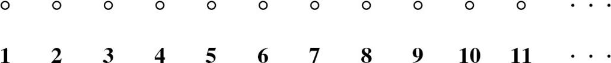
图 NP-1 自然数集
自然数非常有用，但是它们有一些不足之处。主要的不足之处在于，从一个自然数中减去另一个自然数不总是可行的，用一个自然数除以另一个自然数也不总是可行的。你可以用 7 减去 5，但是不能用 7 减去 12——我的意思是说，这样做想得到一个自然数结果是不可能的。用专业术语讲就是， 在减法运算下不是封闭的。 在除法运算下也不是封闭的：你可以用 12 除以 4，但不能用 12 除以 5，因为其结果就不再是自然数了。
减法的问题因为零和负数的发现而得到解决。大约在 600 年，古印度数学家发现了零。负数是欧洲文艺复兴时期的成果。将自然数系扩张，使其包含这些新的数字，就得到了第二个“俄罗斯套娃”，它包含第一个“俄罗斯套娃”。这个数系就是整数系，整数全体用符号 （来自德文单词“Zahl”，意为“数”）表示。整数可以形象地用向左右两端无限延长的一行点来表示（图 NP-2）。
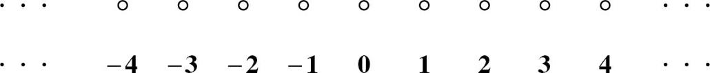
图 NP-2 整数集
现在，我们可以随意进行加法、减法和乘法运算，当然，做乘法运算需要了解符号法则：
正正得正，正负得负，负正得负，负负得正。
或者更简洁地说：同号相乘得正，异号相乘得负。当可以进行除法运算时，符号法则同样适用，如 -12 除以 -3 得 4。
然而，除法在 中不总是可行的， 在除法运算下不是封闭的。为了得到一个在除法运算下封闭的数系，我们还要再次扩张，引入分数（包括正分数和负分数）。这就是第三个“俄罗斯套娃”，它包含了前两个“套娃”。这个“套娃”被称为有理数，有理数全体记为 （来自英文单词“quotient”，意为“商”）。
有理数是“稠密的”。这意味着在任意两个有理数之间，你总可以找到另外一个有理数。 和 都不具有这样的性质。11 和 12 之间没有自然数，-107 与 -106 之间也没有整数。然而，在有理数
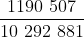
和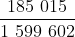
之间总可以找到一个有理数，虽然这两个有理数相差不到 16 万亿分之一。例如，有理数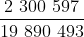
比前面出现的第一个有理数大，但是比第二个有理数小。因为任意两个有理数之间都存在一个有理数，所以你可以在任意两个有理数之间找到无穷多个有理数。这就是“稠密”的真正含义。因为 具有稠密性，所以它可以用一条向左右两端无限延伸的连续直线来表示（图 NP-3）。每一个有理数在这条直线上都有一个位置。
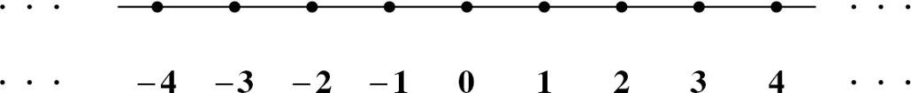
图 NP-3 有理数集 （注：我们可以用同样的图形来表示实数集 ）
你看到整数之间的空隙是如何被填充的了吗？任意两个整数，比如 27 和 28，其间的有理数都是稠密的。
要注意，这些“俄罗斯套娃”是嵌套的， 套着 ， 套着 。还有另一种看待它们的方法：自然数是“名誉整数”，整数和自然数是“名誉有理数”。为了强调，名誉数可以被“装扮”成适当的模样。自然数 12 可以被“装扮”成整数 +12，或者有理数
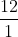
。※※※
还有另外一些数，它们既不是整数也不是有理数。公元前 500 年左右，古希腊人发现了这类数。这个发现给古希腊人的思维带来了深刻的影响，而且还提出了一些问题，这些问题至今也没有令所有数学家和哲学家都满意的答案。
这类数的最简单的例子是 2 的平方根，如果你把它与自身相乘，就得到 2。（在几何中，边长是单位 1 的正方形的对角线的长度就是 2 的平方根。）很容易证明，没有一个有理数可以表示成边长为单位 1 的正方形的对角线的长度 2。用很类似的方法可以证明：如果
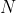
不是完全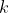
次幂，那么 的 次方根一定不是有理数。2欧几里得首次给出了一般的证明，他使用了反证法。假设这件事不成立，即假设存在某个有理数
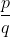
（其中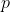
和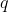
都是整数）满足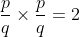
。假设 是最简分数（将分子和分母中的公因子约去，这总能做到），那么 和 中必定有一个是奇数。用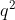
乘上式两边得到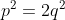
，而且只有偶数的平方是偶数，所以 一定是偶数， 一定是奇数。因此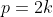
， 是某个整数。于是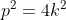
，所以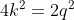
，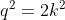
，因此 也一定是偶数。那么 和 就都是偶数，出现矛盾。因此假设不成立，所以不存在平方等于 2 的有理数。（另一个证明可以在我的书《素数之恋》的注释 11 中找到。）显然，我们需要另外一个“俄罗斯套娃”，它要能够包含所有这些无理数。这个新“套娃”就是实数系，用 表示。2 的平方根是一个实数，但它不是有理数：它属于 但不属于 （当然它也不属于 或 ）。
实数同有理数一样，也是稠密的。我们在任意两个实数之间总能找到另外一个实数。因为有理数是稠密的，已经“填满”了图示中的直线（图 NP-3），你也许会提出这样的疑问：如何把实数挤进有理数之间？更怪异的是， 和 是“可数”的，但 是不可数的。可数集合的意思是，其中的元素可以与用来计数的数集 中的元素 1, 2, 3,…相匹配，一直到无穷。然而，对于实数 ，你做不到这一点。从某种意义上讲， 非常大，比 、 和 都大，以至于 无法数出来。那么，超级无穷多的实数可以安插在有理数之间吗？
这是一个非常有趣的问题，数学家们也因此伤透了脑筋。不过，这不属于代数学的历史，我在这里提到它只是因为第 14 章要提到可数性的问题。你记住以下这点就够了：表示 的图和表示 的图看起来是一样的，都是一条向左右两端无限延伸的连续直线（图 NP-3）。当这条直线表示 时，它被称为“实数轴”。更抽象地说，“实数轴”可以作为 的同义词。
※※※
在 中，加法和乘法总是可行的，减法和除法有时可行。在 中，加法、减法和乘法总是可行的，除法有时可行。在 中，加法、减法、乘法和除法（在数学中不允许除以 0）都是可行的，但是开方却出现了问题。
可以解决这些问题，但只限于非负数。根据符号法则，任何数与自身相乘都得到一个非负数。或者换一种说法：在 中，负数没有平方根。
从 16 世纪起，这个限制开始成为数学家们前进的障碍，所以必须加入新的“俄罗斯套娃”。这个“套娃”就是复数系，记为 。在 中，每一个数都有平方根。事实证明，只用普通的实数和一个新数
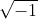
（通常记为 i）就可以构建整个新数系。例如 -25 的平方根是 5i，因为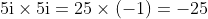
。那么 i 的平方根是什么？这不难回答，我们熟悉的乘法去括号法则是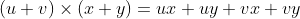
，所以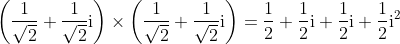
由于
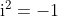
，并且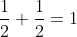
，所以上面等式的右边正好等于 i。因此，等式左边括号中的数就是 i 的平方根。和之前一样，新的“俄罗斯套娃”也是嵌套的。实数
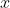
是“名誉复数”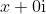
（形如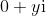
或简写为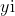
的复数称为虚数，其中的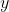
为实数）。根据 ，很容易推出复数的加法、减法、乘法和除法的运算法则，如下所示：
加法：
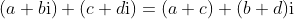
减法：
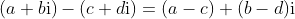
乘法：
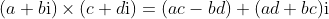
除法：
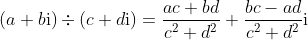
因为复数有两个独立的部分，所以不能用直线来表示 。我们需要一个向各个方向无限延伸的平面来表示 ，这个平面被称为复平面（图 NP-4）。复数
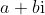
可以用通常的直角坐标表示成这个平面上的一个点。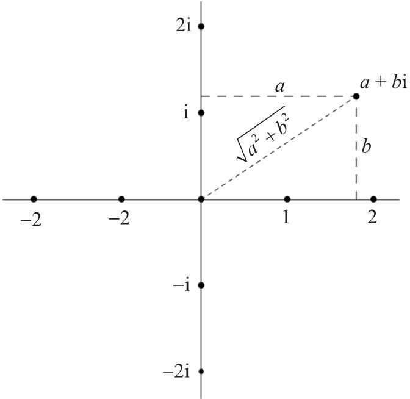
图 NP-4 复数集
注意，每一个复数 都对应一个非常重要的非负实数，这个实数被称为该复数的模，定义为
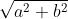
。我希望图 NP - 4 可以清楚地说明这一点，根据毕达哥拉斯定理 3，复数的模就是在复平面内它到零点的距离，零点通常被称为原点。3毕达哥拉斯定理（即我们常说的勾股定理。——译者注）考虑的是一个平面直角三角形的边长。通过简单的观察可以发现，直角所对的斜边一定比其他两个直角边长。这个定理说的是斜边长的平方等于两个直角边长的平方之和：
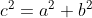
，其中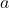
和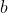
分别是两个直角边的长度， 是斜边的长度。这个公式的另外一种表示法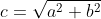
如图 NP-4 所示。我们以后还会遇到其他数系，但是一切都是从这五个依次嵌套的基本数系开始的：、、、 和 。
※※※
关于数的内容就介绍到这里。本书经常提到的另一个关键概念是多项式。这个词的词源是希腊文和拉丁文的混合，意思是“有很多名称”，“名称”指的是“有名称的部分”。似乎是法国数学家弗朗索瓦·韦达（1540—1603）在 16 世纪晚期首先开始使用这个词的，在此一百年后这个词才出现在英文中。
多项式是从数和“未知量”开始，仅通过加法、减法和乘法运算得到的数学表达式（不是方程，因为这里没有等号），这些运算可以出现任意有限多次，但不能出现无限次。以下是一些多项式的例子：
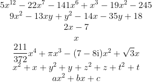
注意以下几点。
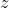
和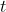
是最常用的表示未知量的字母。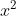
、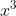
、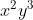
、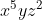
等。、、 或 中的数。我们可以用表示已知量的字母来扩充一个表达式。这些字母通常取自拉丁字母表的开头（、、 等）或者中间（、、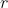
等）。※※※
多项式只是所有数学表达式的一个小子集。如果引入除法，我们就可以得到更大的一类表达式，这类表达式叫作有理分式，例如：
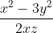
这是一个包含 3 个未知量的有理分式，但它不是多项式。引入更多的运算可以进一步扩大这个集合：开方、取正弦、余弦或对数，等等。最后得到的表达式都不是多项式。
得到一个多项式的步骤是：取一些“已知”数，这些数既可以是明确的数（17、、π等），也可以是代表数的字母（、、、……、、 等）；将这些数与一些未知量（、、 等）混合，进行有限次加法、减法和乘法运算，结果就是一个多项式。
尽管多项式在数学表达式中只占很小的比例，但是它们非常重要，特别是在代数中更重要。当数学家使用形容词“代数的”时，通常可以被理解为“关于多项式的”。仔细检查一下代数学中的某个定理，即使是抽象层次非常高的定理，经过层层分析其意义，我们很可能就会发现多项式。可以肯定地说，多项式是从古至今的代数学中最重要的概念。